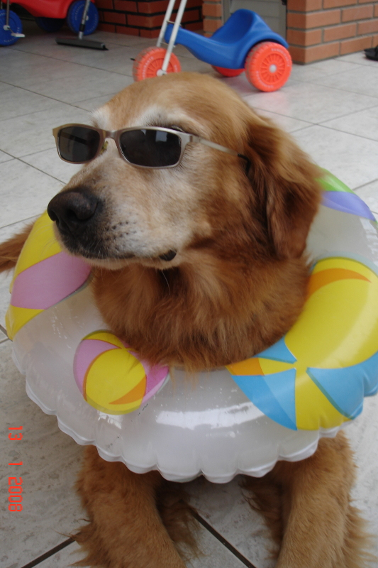

Sobre o canil
Nossa paixão pelos Goldens surgiu em 2007, quando ao passar em frente à loja de um amigo, vimos aquele cão avermelhado e soubemos que havia sido abandonado.
O cão era extremamente dócil e resolvemos então adotá-lo. Começava assim uma paixão através daquele cão a quem demos o nome de Oddie.
Algum tempo depois ganhamos de presente uma linda cadela chamada Anna e partir desse casal começamos então, de uma forma quase sem querer a criar Golden Retrievers.
O tempo foi passando, e minha mulher então sentiu o desejo de adquirirmos mais cães, e passarmos a lidar com os cães de maneira mais profissional. Foram chegando então o Bidu, a Vick, Stella, Jump ...
Nesse mesmo período então registramos o canil e passamos a dar foco numa criação com belos exemplares, e com o apoio da Marilene do canil Wolf's Hunter.
Aprendemos muito nesse período e hoje podemos ter orgulho de termos, senão o melhor, mais um dos melhores plantéis de Santa Catarina.
Os pugs vieram mais tarde, em 2012, quando queríamos ter cães que pudéssemos criar dentro de casa, então, após estudarmos diversas raças, vimos aquelas coisinhas que de tão feias, ficavam bonitas. E assim chegou a Dora, e em 2013, a Kyara.
Nosso objetivo sempre foi a qualidade antes de tudo, criando os cães sempre soltos, pois não gostávamos da imagem pejorativa que muitos tem de um canil pois nossos cães são antes de tudo, os "nossos" cães de estimação.